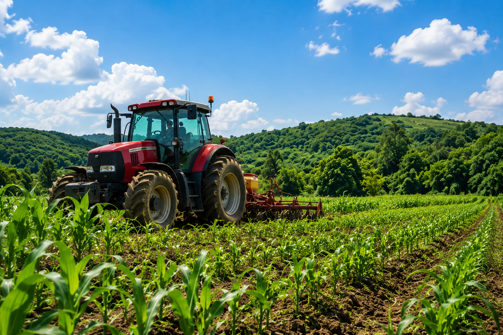

O agronegócio desempenha um papel fundamental na economia brasileira, sendo responsável pela produção de alimentos, fibras e matérias-primas utilizadas diariamente pela população.
Entretanto, para que essa produção aconteça de forma responsável, é necessário utilizar os recursos naturais de maneira consciente. A preservação do solo, da água e da biodiversidade contribui para um desenvolvimento mais equilibrado e sustentável.
Atualmente, diversas tecnologias permitem aumentar a produtividade agrícola sem causar grandes impactos ao meio ambiente. Dessa forma, produção e preservação podem caminhar juntas em benefício da sociedade e das futuras gerações.